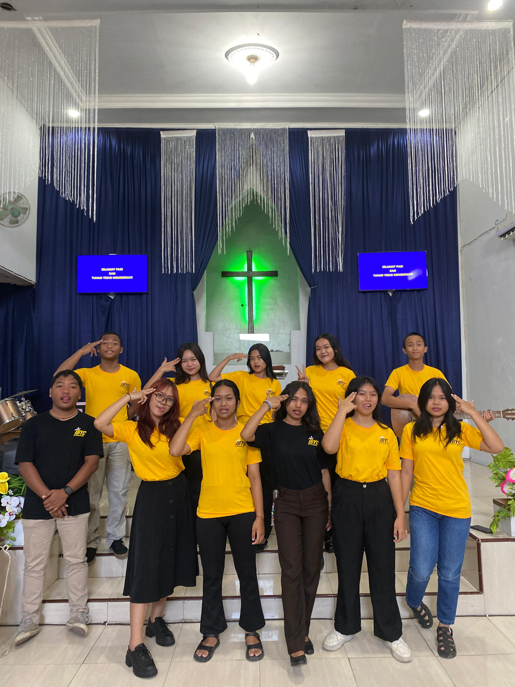

Discover our activities, grow together in faith, and build meaningful friendships through fellowship, sharing, and learning.
Every Saturday
4 pm
GBI Tangkil
A time to worship, share, and grow together as one community.
A moment to share God's Word, experiences, and faith with one another.
After the Sunday service
Learn God's Word together and discover how to apply His teachings in our daily lives.
About PKMB Tangkil
We are a youth group from the Tangkil Indonesian Baptist Church, a community of young people who come together to grow in faith, build meaningful friendships, and serve God and others. Under the guidance of our pastor, Pdt. Tatit Kristianto, we seek to create a positive and supportive environment where every young person can learn about God's Word, develop their talents, and become an active part of the church and community. Through worship, fellowship, service, and various youth activities, we strive to grow together in faith and become young people who reflect God's love in our daily lives.

Monthly Youth Activity Statistics